微观：学习率优化器 优化器（Optimizer） 是一种算法或方法，用于迭代地调整模型的参数，以最小化损失函数。例如我们之前学习过的标准梯度下降法、带动量的梯度下降法和
固定学习率优化器 梯度下降法的回顾 在随机梯度下降（SGD）或小批量梯度下降（MBGD）中，参数的更新完全依赖于当前批次计算出的梯度。这里以 ℓ i k ( θ k ) \ell_{i_k}(\boldsymbol{\theta}_k) ℓ i k ( θ k ) 为例： θ k + 1 = θ k − μ ∇ ℓ i k ( θ k ) \boldsymbol{\theta}_{k+1}=\boldsymbol{\theta}_k- \mu \nabla \ell_{i_k}(\boldsymbol{\theta}_k) θ k + 1 = θ k − μ ∇ ℓ i k ( θ k ) ∇ ℓ i k ( θ k ) \nabla \ell_{i_k}(\boldsymbol{\theta}_k) ∇ ℓ i k ( θ k ) 是第 k k k 步的随机梯度。 μ \mu μ 是学习率。 这可能导致两个问题：在梯度变化剧烈的方向（例如峡谷地貌的峭壁）上产生剧烈震荡。在梯度平缓的方向（例如峡谷地貌的谷底）上收敛速度很慢。
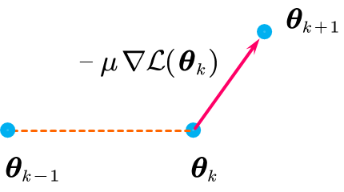
为了解决这个问题，我们引入了 动量（Momentum） ，它的核心思想是为参数更新引入“惯性”，即在当前更新时，也考虑上一步的更新方向和大小。
经典动量法引入了一个“动量”向量 m \boldsymbol{m} m ，它作为过去梯度的 指数加权 移动平均值，也就是在更新过程中增加了历史梯度的影响（惯性），使更新的角度变化减小（路径更加平滑）。 θ k + 1 = θ k − m k m k = β k m k − 1 + μ ∇ ℓ i k ( θ k ) \begin{aligned}
\boldsymbol{\theta}_{k+1} &= \boldsymbol{\theta}_k - \boldsymbol{m}_k \\
\boldsymbol{m}_k &= \beta_k \boldsymbol{m}_{k-1} + \mu \nabla \ell_{i_k}(\boldsymbol{\theta}_k)
\end{aligned} θ k + 1 m k = θ k − m k = β k m k − 1 + μ ∇ ℓ i k ( θ k ) m k \boldsymbol{m}_k m k 是第 k k k 步的动量向量。 在实际应用中，我们设置 m 0 = 0 \boldsymbol{m}_{0}=\boldsymbol{0} m 0 = 0 β k \beta_k β k 是动量系数（通常是一个接近 m k − 1 \boldsymbol{m}_{k-1} m k − 1 的衰减/影响程度。 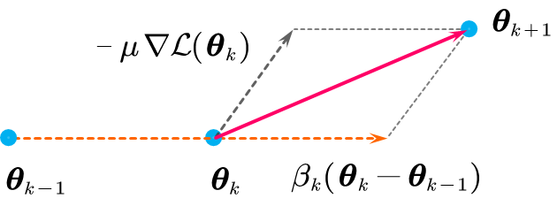
我们可以展开 m k \boldsymbol{m}_{k} m k 的指数加权移动平均式子（这里将 ∇ ℓ i k ( θ k ) \nabla \ell_{i_k}(\boldsymbol{\theta}_k) ∇ ℓ i k ( θ k ) 记为 g k \boldsymbol{g}_k g k ）： m k = μ g k + β μ g k − 1 + β 2 μ g k − 2 + ⋯ + β k − 1 μ g 1 \boldsymbol{m}_{k}=\mu \boldsymbol{g}_{k}+ \beta \mu\boldsymbol{g}_{k-1}+ \beta^{2} \mu\boldsymbol{g}_{k-2}+\cdots+ \beta^{k-1} \mu\boldsymbol{g}_{1} m k = μ g k + β μ g k − 1 + β 2 μ g k − 2 + ⋯ + β k − 1 μ g 1 从展开式可以看出 m k \boldsymbol{m}_k m k 实际上是过去所有梯度的指数加权移动平均。 SGD with Nesterov's momentum (Nesterov
Nesterov
w k = θ k + β k ( θ k − θ k − 1 ) θ k + 1 = w k − μ ∇ ℓ i k ( w k ) \begin{aligned}
\boldsymbol{w}_k &= \boldsymbol{\theta}_k + \beta_k(\boldsymbol{\theta}_k - \boldsymbol{\theta}_{k-1}) \\
\boldsymbol{\theta}_{k+1} &= \boldsymbol{w}_k - \mu \nabla \ell_{i_k}(\boldsymbol{w}_k)
\end{aligned} w k θ k + 1 = θ k + β k ( θ k − θ k − 1 ) = w k − μ ∇ ℓ i k ( w k ) 这里的 w k \boldsymbol{w}_k w k 代表一个“预估”位置。 β k ( θ k − θ k − 1 ) \beta_k(\boldsymbol{\theta}_k - \boldsymbol{\theta}_{k-1}) β k ( θ k − θ k − 1 ) 这一项是基于上一步的移动（即动量）来估算参数“即将”到达的位置。 β k \beta_k β k 是一个动量系数，通常被设置为一个随迭代次数 k k k 变化的特定值，例如 β k = k − 1 k + 2 \beta_k=\frac{k-1}{k+2} β k = k + 2 k − 1 。 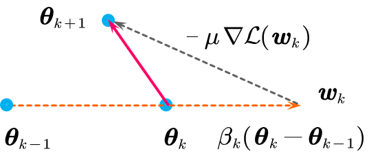
区别： 经典动量在 当前位置 θ k \boldsymbol{\theta}_k θ k 计算梯度，然后加上动量；而 w k \boldsymbol{w}_k w k ，然后在那个 未来位置 w k \boldsymbol{w}_k w k 计算梯度 ∇ ℓ i k ( w k ) \nabla \ell_{i_k}(\boldsymbol{w}_k) ∇ ℓ i k ( w k ) ，并用这个“前瞻”的梯度来修正最终的更新方向。这个前瞻的梯度会提供一个“刹车”或“修正”的效果，使其收敛更稳定、更高效。 固定学习率的问题 前面讨论的 θ \boldsymbol{\theta} θ 中的 所有 参数（或坐标）都使用了 相同 的、全局的学习率 μ \mu μ 。 以 如何设置学习率 μ \mu μ ？ 研究人员发现， 在大型模型中，不同参数的更新特性可能天差地别 。
例如，在处理稀疏数据时（如 频繁 出现。而另一些“冷门”特征（如低频词"aardvark"）对应的参数，其梯度 极其稀疏 ，可能几百上千步才出现一次。
如果 μ \mu μ 设置得 很高 （为了让“冷门”特征在难得的更新中能学到东西），那么“热门”特征的参数会因为更新幅度过大，导致其在最优解附近剧烈振荡，甚至“爆炸” (diverge)。
如果 μ \mu μ 设置得 很低 （为了让“热门”特征能稳定收敛），那么“冷门”特征的参数在其极其稀少的更新机会中，每次移动的步幅都太小，导致模型几乎学不到这些稀疏特征。 在理想的（凸）优化问题中，当参数 θ k \boldsymbol{\theta}_k θ k 接近最优解 θ ∗ \boldsymbol{\theta}^* θ ∗ 时，真实的（full-batch）梯度 ∇ L ( θ k ) \nabla \mathcal{L}(\boldsymbol{\theta}_k) ∇ L ( θ k ) 本身就会趋近于零。如果使用全批量梯度下降（GD），更新步长 μ ⋅ ∇ L ( θ k ) \mu \cdot \nabla \mathcal{L}(\boldsymbol{\theta}_k) μ ⋅ ∇ L ( θ k ) 自然会变小，实现“自动”收敛。 然而，这在 MBGD （小批量梯度下降）中遇到了一个核心挑战： 梯度噪声 (Gradient Noise) 。
我们知道，MBGD g k = ∇ ℓ i k ( θ k ) \boldsymbol{g}_k = \nabla \ell_{i_k}(\boldsymbol{\theta}_k) g k = ∇ ℓ i k ( θ k ) 是对真实梯度 ∇ L ( θ k ) \nabla L(\boldsymbol{\theta}_k) ∇ L ( θ k ) 的一个 有噪声的估计 。即使我们已经处在真正的最优解 θ ∗ \boldsymbol{\theta}^* θ ∗ 上（此时真实梯度 ∇ L ( θ ∗ ) = 0 \nabla \mathcal{L}(\boldsymbol{\theta}^*)=0 ∇ L ( θ ∗ ) = 0 ），从 下一个 mini-batch g k \boldsymbol{g}_k g k 也 几乎不为零 。它只是在 如果 μ \mu μ 保持不变（较大） ：在训练后期， θ k \boldsymbol{\theta}_k θ k 的更新 μ ⋅ g k \mu \cdot \boldsymbol{g}_k μ ⋅ g k 主要就是由这个“噪声”驱动的。这个（较大的） μ \mu μ 会放大噪声的影响，导致参数 θ k \boldsymbol{\theta}_k θ k 在最优解的“碗底”被噪声踢来踢去， 无法稳定下来 ，只能在一个较差的精度上“反复横跳”（振荡）。 因此，必须减小 μ \mu μ ：当我们在后期主动地、强制地减小 μ \mu μ 时（例如 μ → 0 \mu \to 0 μ → 0 ），我们就是在抑制 (dampen) 这种噪声的影响。 μ ⋅ g k \mu \cdot \boldsymbol{g}_k μ ⋅ g k 这一项变得非常小，使得参数 θ k \boldsymbol{\theta}_k θ k 能够“安静地”沉降 (settle) 到最优解附近，实现更精确的收敛。 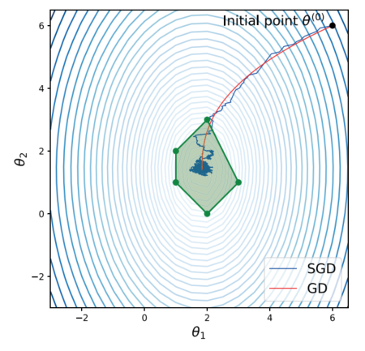
因此，为了管理这个 μ \mu μ ，研究人员将学习率拆成了两个部分，一是 “微观”学习率 ，为 g \boldsymbol{g} g 中的每一个参数都设置不同的学习率，二是 “全局”学习率 μ k \mu_k μ k ，同时作用于所有的参数。这分别对应下面两种技术：
自适应学习率优化器 (Adaptive Optimizers) ：这些算法在 每一步 (step) 都会根据“历史梯度”信息，自动地为 每一个参数 动态地、自适应地调整其“有效”学习率。
学习率调度器 (Learning Rate Schedulers) ：它不关心单个参数的差异，而是根据一套预先设定的规则，用于在训练过程的不同阶段（例如，每隔 所有参数 的学习率 μ k \mu_k μ k 。 自适应学习率优化器 下面我们从“微观”学习率的调控入手，研究如何为 每一个参数 设置一个能自动调整的学习率。
AdaGrad: 累积 AdaGrad (Adaptive Gradient Algorithm) 的核心思想是： 通过累积过去的梯度信息，来动态调整每个参数的学习率 。 也就是对每个参数（坐标），用其 历史梯度 来归一化（normalize）其当前的梯度更新。
为了调整每一个参数的学习率，AdaGrad 逐元素 (element-wise) 执行的。对于参数 θ \boldsymbol{\theta} θ 的第 j j j 个坐标值（ j = 1 , … , d j=1, \dots, d j = 1 , … , d ），其更新规则如下： θ k + 1 [ j ] = θ k [ j ] − μ k ∑ t = 1 k ( g t [ j ] ) 2 + ϵ × g k [ j ] \theta_{k+1}[j] = \theta_k[j] - \frac{\mu_k}{\sqrt{\sum_{t=1}^k (g_t[j])^2 + \epsilon}} \times g_k[j] θ k + 1 [ j ] = θ k [ j ] − ∑ t = 1 k ( g t [ j ] ) 2 + ϵ μ k × g k [ j ] g k = ∇ ℓ i k ( θ k ) \boldsymbol{g}_k = \nabla \ell_{i_k}(\boldsymbol{\theta}_k) g k = ∇ ℓ i k ( θ k ) 是第 k k k 步的随机梯度向量。 g k [ j ] g_k[j] g k [ j ] 是该梯度向量的第 j j j 个分量。 μ k \mu_k μ k 是一个全局的（或初始的）学习率。 ϵ \epsilon ϵ 是一个很小的平滑项（例如 1 0 − 8 10^{-8} 1 0 − 8 ），用于防止分母为零。 “ 累积 ”是 θ [ j ] \theta[j] θ [ j ] 过去所有梯度的平方和 的平方根： ∑ t = 1 k ( g t [ j ] ) 2 ⇒ ∑ t = 1 k ( g t [ j ] ) 2 = ( g 1 [ j ] ) 2 + ( g 2 [ j ] ) 2 + ⋯ + ( g k [ j ] ) 2 \sqrt{\sum_{t=1}^k (g_t[j])^2} \quad \Rightarrow \quad \sum_{t=1}^k (g_t[j])^2 = (g_1[j])^2 + (g_2[j])^2 + \dots + (g_k[j])^2 t = 1 ∑ k ( g t [ j ] ) 2 ⇒ t = 1 ∑ k ( g t [ j ] ) 2 = ( g 1 [ j ] ) 2 + ( g 2 [ j ] ) 2 + ⋯ + ( g k [ j ] ) 2
惩罚梯度大的坐标 (Penalize large gradients): 如果某个参数 θ [ j ] \theta[j] θ [ j ] 在过去（从 t = 1 t=1 t = 1 到 k k k ）的梯度 g t [ j ] g_t[j] g t [ j ] 经常很大。 那么它的累积和 ∑ t = 1 k ( g t [ j ] ) 2 \sum_{t=1}^k (g_t[j])^2 ∑ t = 1 k ( g t [ j ] ) 2 也会很大。 这导致分母变大，从而使其 有效学习率 （ μ k … \frac{\mu_k}{\sqrt{\dots}} … μ k ） 减小 。 效果： 减慢那些更新幅度过大、过于“活跃”的参数的更新速度。
鼓励梯度小的坐标 (Increase exploration for small ones): 如果某个参数 θ [ j ] \theta[j] θ [ j ] 在过去的梯度 g t [ j ] g_t[j] g t [ j ] 经常很小（例如稀疏特征，大部分时间梯度为 那么它的累积和 ∑ t = 1 k ( g t [ j ] ) 2 \sum_{t=1}^k (g_t[j])^2 ∑ t = 1 k ( g t [ j ] ) 2 会很小。 这导致分母很小，使其 有效学习率 （ μ k … \frac{\mu_k}{\sqrt{\dots}} … μ k ） 增大 。 效果： 当这个稀疏特征难得出现一次（ g k [ j ] g_k[j] g k [ j ] 不为 总结 ：AdaGrad 累积 每个参数的历史梯度平方，自动地为不同参数分配不同的学习率。它降低了手动调整学习率的负担，并且在处理稀疏数据时表现尤为出色。
不过
RMSProp: 衰减 RMSProp (Root Mean Square Propagation) 改进了 指数加权移动平均 （exponentially decaying moving average）。
这正是“衰减”的含义： 我们只关心近期的梯度信息，而让久远的梯度信息“衰减”掉 。也就是不再使用所有梯度的平方和，而是使用一个衰减的均值 s k \boldsymbol{s}_k s k 来估计近期梯度的平均大小。 θ k + 1 [ j ] = θ k [ j ] − μ k s k [ j ] + ϵ g k [ j ] \theta_{k+1}[j] = \theta_k[j] - \frac{\mu_k}{\sqrt{s_k[j] + \epsilon}}g_k[j] θ k + 1 [ j ] = θ k [ j ] − s k [ j ] + ϵ μ k g k [ j ] 而不是我们将 ∑ t = 1 k ( g t [ j ] ) 2 \sqrt{\sum_{t=1}^k (g_t[j])^2} ∑ t = 1 k ( g t [ j ] ) 2 替换为指数加权移动平均 s k [ j ] \sqrt{s_k[j]} s k [ j ] ： s k [ j ] = β s k − 1 [ j ] + ( 1 − β ) ( g k [ j ] ) 2 s_k[j] = \beta s_{k-1}[j] + (1-\beta) (g_k[j])^2 s k [ j ] = β s k − 1 [ j ] + ( 1 − β ) ( g k [ j ] ) 2 s k \boldsymbol{s}_k s k 是第 k k k 步的“平方梯度均值”向量。 β \beta β 是衰减率（decay rate），一个接近 ( 1 − β ) ( g k [ j ] ) ² (1-β) (g_k[j])² ( 1 − β ) ( g k [ j ]) ² ：这是当前梯度平方所占的权重。 β s k − 1 [ j ] β s_{k-1}[j] β s k − 1 [ j ] ：这是历史平方梯度均值所占的权重。 我们可以展开 s k [ j ] s_k[j] s k [ j ] 的递推式，可以发现 s k [ j ] s_k[j] s k [ j ] 是历史平方梯度的指数加权平均： s k [ j ] = β k − 1 ( 1 − β ) ( g 1 [ j ] ) 2 + β k − 2 ( 1 − β ) ( g 2 [ j ] ) 2 + ⋯ + ( 1 − β ) ( g k [ j ] ) 2 = ( 1 − β ) ∑ i = 1 k β k − i ( g i [ j ] ) 2 \begin{aligned}
s_k[j] &= \beta^{k-1}(1-\beta)(g_1[j])^2 + \beta^{k-2}(1-\beta)(g_2[j])^2 + \dots + (1-\beta)(g_k[j])^2 \\
&= (1-\beta) \sum_{i=1}^k \beta^{k-i} (g_i[j])^2
\end{aligned} s k [ j ] = β k − 1 ( 1 − β ) ( g 1 [ j ] ) 2 + β k − 2 ( 1 − β ) ( g 2 [ j ] ) 2 + ⋯ + ( 1 − β ) ( g k [ j ] ) 2 = ( 1 − β ) i = 1 ∑ k β k − i ( g i [ j ] ) 2 通过这种方式， s k \boldsymbol{s}_k s k 主要反映了 最近 一段时间内的梯度平方的平均值（Root Mean Square，均方根）。如果 β = 0.9 \beta=0.9 β = 0.9 ，它大致是过去 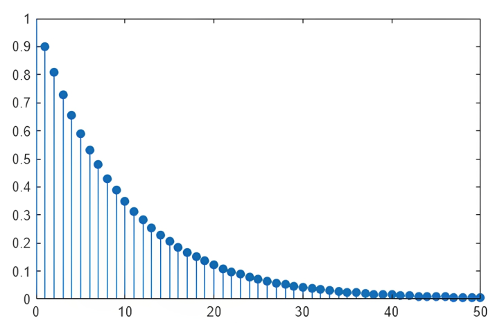
优势 ：RMSProp β \beta β ，解决了 s k \boldsymbol{s}_k s k 保持在一个合理的范围内，使得训练可以持续进行，同时它依然保留了为不同参数自适应调整学习率的能力。 Adam : 动量 + 衰减 Adam (Adaptive Moment Estimation) 优化器将这个“指数加权移动平均”的思想应用了两次，并且巧妙地 结合了两种思想 ：
θ k + 1 = θ k − μ k v ^ k + ϵ m ^ k \boldsymbol{\theta}_{k+1} = \boldsymbol{\theta}_k - \frac{\mu_k}{\sqrt{\hat{\boldsymbol{v}}_k} + \epsilon}\hat{\boldsymbol{m}}_k θ k + 1 = θ k − v ^ k + ϵ μ k m ^ k
动量 (Momentum) m ^ k \hat{\boldsymbol{m}}_k m ^ k ：像 第一阶矩估计 ）来加速收敛。
衰减 (Decay) μ k v ^ k + ϵ \frac{\mu_k}{\sqrt{\hat{\boldsymbol{v}}_k} + \epsilon} v ^ k + ϵ μ k ：像 第二阶矩估计 ）来实现自适应学习率。 μ \mu μ 是全局学习率，始终不变。
动量 (Momentum) -估计第一阶矩 (1st Moment) m k = β 1 m k − 1 + ( 1 − β 1 ) g k , with m 0 = 0 \boldsymbol{m}_k = \beta_1 \boldsymbol{m}_{k-1} + (1-\beta_1) \boldsymbol{g}_k, \quad \text{with} \quad \boldsymbol{m}_0 = \boldsymbol{0} m k = β 1 m k − 1 + ( 1 − β 1 ) g k , with m 0 = 0 β 1 \beta_1 β 1 通常取 m k \boldsymbol{m}_k m k 展开，可以发现 m k \boldsymbol{m}_k m k 是历史所有梯度的加权平均值（动量） m k = β 1 k − 1 ( 1 − β 1 ) g 1 + ⋯ + β 1 ( 1 − β 1 ) g k − 1 + ( 1 − β 1 ) g k \boldsymbol{m}_k =\beta_1^{k-1}(1-\beta_1)\boldsymbol{g}_1 + \dots + \beta_1(1-\beta_1)\boldsymbol{g}_{k-1} + (1-\beta_1)\boldsymbol{g}_k m k = β 1 k − 1 ( 1 − β 1 ) g 1 + ⋯ + β 1 ( 1 − β 1 ) g k − 1 + ( 1 − β 1 ) g k
衰减 (Decay) -估计第二阶矩 (2nd Moment) v k = β 2 v k − 1 + ( 1 − β 2 ) g k 2 , with v 0 = 0 \boldsymbol{v}_k = \beta_2 \boldsymbol{v}_{k-1} + (1-\beta_2) \boldsymbol{g}_k^2, \quad \text{with} \quad \boldsymbol{v}_0 = \boldsymbol{0} v k = β 2 v k − 1 + ( 1 − β 2 ) g k 2 , with v 0 = 0 β 2 \beta_2 β 2 通常取 g k 2 \boldsymbol{g}_k^2 g k 2 表示 g k \boldsymbol{g}_k g k 中元素的逐个平方）。 我们将 v k \boldsymbol{v}_k v k 展开，可以发现 v k \boldsymbol{v}_k v k 是梯度平方的加权平均值（“衰减”或 v k = β 2 k − 1 ( 1 − β 2 ) g 1 2 + ⋯ + β 2 ( 1 − β 2 ) g k − 1 2 + ( 1 − β 2 ) g k 2 \boldsymbol{v}_k = \beta_2^{k-1}(1-\beta_2)\boldsymbol{g}_1^2 + \dots + \beta_2(1-\beta_2)\boldsymbol{g}_{k-1}^2 + (1-\beta_2)\boldsymbol{g}_k^2 v k = β 2 k − 1 ( 1 − β 2 ) g 1 2 + ⋯ + β 2 ( 1 − β 2 ) g k − 1 2 + ( 1 − β 2 ) g k 2 偏差修正 (Bias Correction) ：由于 m 0 \boldsymbol{m}_0 m 0 和 v 0 \boldsymbol{v}_0 v 0 通常初始化为 k k k 很小）， m k \boldsymbol{m}_k m k 和 v k \boldsymbol{v}_k v k 会严重偏向于 m ^ k = m k 1 − β 1 k v ^ k = v k 1 − β 2 k \hat{\boldsymbol{m}}_k = \frac{\boldsymbol{m}_k}{1 - \beta_1^k} \quad\quad \hat{\boldsymbol{v}}_k = \frac{\boldsymbol{v}_k}{1 - \beta_2^k} m ^ k = 1 − β 1 k m k v ^ k = 1 − β 2 k v k 当 k k k 很小时， 1 − β k 1-\beta^k 1 − β k 接近 m k \boldsymbol{m}_k m k 和 v k \boldsymbol{v}_k v k ，使其接近真实均值。 当 k k k 很大时， 1 − β k 1-\beta^k 1 − β k 接近 总结 ：Adam 综合了动量法（收敛快）和 RMSProp（自适应学习率）的优点，通常在各种任务中都表现得非常稳健和高效。
计算随机梯度 (Compute stochastic gradient) ：从当前数据批次 i k i_k i k 计算损失函数关于参数 θ k \boldsymbol{\theta}_k θ k 的梯度。 g k = ∇ ℓ i k ( θ k ) \boldsymbol{g}_k = \nabla \ell_{i_k}(\boldsymbol{\theta}_k) g k = ∇ ℓ i k ( θ k )
更新动量 (Update momentum) ：计算梯度的指数加权移动平均（第一阶矩估计）。 m k = β 1 m k − 1 + ( 1 − β 1 ) g k \boldsymbol{m}_k = \beta_1 \boldsymbol{m}_{k-1} + (1 - \beta_1) \boldsymbol{g}_k m k = β 1 m k − 1 + ( 1 − β 1 ) g k
更新自适应学习率项 (Update adaptive learning rate) ：计算梯度平方的指数加权移动平均（第二阶矩估计）。 v k = β 2 v k − 1 + ( 1 − β 2 ) g k 2 \boldsymbol{v}_k = \beta_2 \boldsymbol{v}_{k-1} + (1 - \beta_2) \boldsymbol{g}_k^2 v k = β 2 v k − 1 + ( 1 − β 2 ) g k 2
偏差修正动量 (Bias-corrected momentum) ：修正因 m 0 \boldsymbol{m}_0 m 0 初始化为 m ^ k = m k 1 − β 1 k \hat{\boldsymbol{m}}_k = \frac{\boldsymbol{m}_k}{1 - \beta_1^k} m ^ k = 1 − β 1 k m k
偏差修正自适应学习率项 (Bias-corrected adaptive learning rate) ：修正因 v 0 \boldsymbol{v}_0 v 0 初始化为 v ^ k = v k 1 − β 2 k \hat{\boldsymbol{v}}_k = \frac{\boldsymbol{v}_k}{1 - \beta_2^k} v ^ k = 1 − β 2 k v k
更新参数 (Update) ：使用修正后的动量 m ^ k \hat{\boldsymbol{m}}_k m ^ k 作为更新方向，并使用修正后的 v ^ k \hat{\boldsymbol{v}}_k v ^ k 来逐元素地缩放（normalize）这个更新。 θ k + 1 = θ k − μ k m ^ k v ^ k + ϵ \boldsymbol{\theta}_{k+1} = \boldsymbol{\theta}_k - \mu_k \frac{\hat{\boldsymbol{m}}_k}{\sqrt{\hat{\boldsymbol{v}}_k} + \epsilon} θ k + 1 = θ k − μ k v ^ k + ϵ m ^ k 偏差修正项（步骤 m k m_k m k 和 v k v_k v k 成为梯度的无偏估计。但在实际工程中，即使没有这个修正，算法可能也能良好工作，因为它主要影响训练的最早几个步骤。 和 逐元素 (element-wise) 应用的，即 θ \boldsymbol{\theta} θ 的每个分量都有自己的自适应学习率。 AdamW: 动量 + 衰减 为了防止过拟合，我们会在损失函数 L ( θ ) \mathcal{L}(\boldsymbol{\theta}) L ( θ ) 中加入一个正则化项 λ 2 ∥ θ ∥ 2 \frac{\lambda}{2} \|\boldsymbol{\theta}\|^2 2 λ ∥ θ ∥ 2 。因此，在第一步计算梯度时，原始的损失梯度 ∇ ℓ i k ( θ k ) \nabla \ell_{i_k}(\boldsymbol{\theta}_k) ∇ ℓ i k ( θ k ) 就会 额外增加一项 λ θ k \lambda \boldsymbol{\theta}_k λ θ k ： g k = ∇ ℓ i k ( θ k ) + λ θ k \boldsymbol{g}_k = \nabla \ell_{i_k}(\boldsymbol{\theta}_k) + \lambda \boldsymbol{\theta}_k g k = ∇ ℓ i k ( θ k ) + λ θ k 然后，将这个 g k \boldsymbol{g}_k g k 送入 这种做法 在 。以
θ k + 1 = θ k − μ g k \boldsymbol{\theta}_{k+1} = \boldsymbol{\theta}_k - \mu \boldsymbol{g}_k θ k + 1 = θ k − μ g k 我们把经过 g k = ∇ ℓ i k ( θ k ) + λ θ k \boldsymbol{g}_k = \nabla \ell_{i_k}(\boldsymbol{\theta}_k) + \lambda \boldsymbol{\theta}_k g k = ∇ ℓ i k ( θ k ) + λ θ k 代入。那么 θ k + 1 = θ k − μ ( ∇ ℓ i k ( θ k ) + λ θ k ) = ( 1 − μ λ ) θ k − μ ∇ ℓ i k ( θ k ) \begin{aligned}
\boldsymbol{\theta}_{k+1} &= \boldsymbol{\theta}_k - \mu \left( \nabla \ell_{i_k}(\boldsymbol{\theta}_k) + \lambda \boldsymbol{\theta}_k \right) \\
&= (1 - \mu \lambda) \boldsymbol{\theta}_k - \mu \nabla \ell_{i_k}(\boldsymbol{\theta}_k)
\end{aligned} θ k + 1 = θ k − μ ( ∇ ℓ i k ( θ k ) + λ θ k ) = ( 1 − μ λ ) θ k − μ ∇ ℓ i k ( θ k ) 这就是“ 权重衰减 (Weightay) ”：在计算梯度更新之前，先将当前的权重 θ k \boldsymbol{\theta}_k θ k 乘以一个小于 ( 1 − μ λ ) (1 - \mu \lambda) ( 1 − μ λ ) ，使其在更新时变小。 但这种做法在 θ k + 1 = θ k − μ g k \boldsymbol{\theta}_{k+1} = \boldsymbol{\theta}_k - \mu \boldsymbol{g}_k θ k + 1 = θ k − μ g k 这么简单： θ k + 1 = θ k − μ k m ^ k v ^ k + ϵ \boldsymbol{\theta}_{k+1} = \boldsymbol{\theta}_k - \mu_k \frac{\hat{\boldsymbol{m}}_k}{\sqrt{\hat{\boldsymbol{v}}_k} + \epsilon} θ k + 1 = θ k − μ k v ^ k + ϵ m ^ k 我们发现，最终用来更新 θ k \boldsymbol{\theta}_k θ k 的，不是 g k \boldsymbol{g}_k g k ，而是 m ^ k v ^ k + ϵ \frac{\hat{\boldsymbol{m}}_k}{\sqrt{\hat{\boldsymbol{v}}_k} + \epsilon} v ^ k + ϵ m ^ k 这一项。这意味着 g k = ∇ ℓ i k ( θ k ) + λ θ k \boldsymbol{g}_k = \nabla \ell_{i_k}(\boldsymbol{\theta}_k) + \lambda \boldsymbol{\theta}_k g k = ∇ ℓ i k ( θ k ) + λ θ k 被送去计算 m k \boldsymbol{m}_k m k 和 v k \boldsymbol{v}_k v k 。L2 λ θ k \lambda \boldsymbol{\theta}_k λ θ k 本应该直接作用于 θ k \boldsymbol{\theta}_k θ k ，但它现在却被“污染”了。Adam 解决的方法非常直接，把 λ 2 ∥ θ ∥ 2 \frac{\lambda}{2} \|\boldsymbol{\theta}\|^2 2 λ ∥ θ ∥ 2 的梯度 λ θ k \lambda \boldsymbol{\theta}_k λ θ k 单独“拎”出来即可。 Adam m k \boldsymbol{m}_k m k 和 v k \boldsymbol{v}_k v k ） 只应该 用来处理来自 损失函数 的梯度 ∇ ℓ i k ( θ k ) \nabla \ell_{i_k}(\boldsymbol{\theta}_k) ∇ ℓ i k ( θ k ) 。 权重衰减 (L2 独立地 、 直接地 作用于参数 θ k \boldsymbol{\theta}_k θ k 。 因此，AdamW
计算随机梯度的时候， 只计算损失函数的梯度 ，不再包含 λ θ k \lambda \boldsymbol{\theta}_k λ θ k ： g k = ∇ ℓ i k ( θ k ) \boldsymbol{g}_k = \nabla \ell_{i_k}(\boldsymbol{\theta}_k) g k = ∇ ℓ i k ( θ k ) 最后更新参数的时候，将
θ k + 1 = θ k − μ k m ^ k v ^ k + ϵ ⏟ Adam自适应更新 − ( μ k ⋅ λ ) θ k ⏟ 解耦的权重衰减 \boldsymbol{\theta}_{k+1} = \boldsymbol{\theta}_k - \underbrace{\mu_k \frac{\hat{\boldsymbol{m}}_k}{\sqrt{\hat{\boldsymbol{v}}_k} + \epsilon}}_{\text{Adam自适应更新}} - \underbrace{(\mu_k \cdot \lambda) \boldsymbol{\theta}_k}_{\text{解耦的权重衰减}} θ k + 1 = θ k − Adam 自适应更新 μ k v ^ k + ϵ m ^ k − 解耦的权重衰减 ( μ k ⋅ λ ) θ k 因此，通过“解耦”，AdamW 以 μ λ \mu \lambda μ λ 的比例将权重推向零 。研究人员也通过实践证明了，我们想要达到的“防止过拟合”的目的，更有效、更本质的实现方式是“权重衰减”（即 AdamW
案例：优化器对比 不同优化器在 鞍点 (Saddle Point) 地形下的表现，所有优化器从鞍部侧面的坡上开始，。
SGD (红色) ：立刻被困在了梯度极小的鞍点平坦区域。因为在鞍点中心附近，梯度 g k ≈ 0 \boldsymbol{g}_k \approx 0 g k ≈ 0 ，导致更新步长 μ g k \mu \boldsymbol{g}_k μ g k 也几乎为零，因此它无法取得进展 Momentum (绿色) 与 NAG (紫色) ：它们引入了一个“惯性”向量，会累积过去的梯度。这两种方法都表现出了“左右摆动”然后加速滑下的行为。由于携带着之前的“惯性”，导致它们“冲过头”，滑向另一侧山坡，然后又被拉回，如此往复，形成振荡。尽管横向在振荡，但纵向（峡谷方向）的梯度始终指向“下坡”。当纵向累积的速度足够大时，它将主导更新方向，使优化器摆脱横向的振荡，“冲”下峡谷
AdaGrad (蓝色) 、RMSProp (黑色) 与 Adadelta (黄色) ：它们都以非常直接的路径滑下，没有振荡。但 只增不减 的累积和。RMSProp
而 没有振荡 的根本原因在于“ 它们对每一个参数（维度）使用了不同的、自适应的学习率 ”。
AdaGrad、RMSProp 和 Adadelta 的核心公式（简化后）如下：
Δ w i = − μ R i + ϵ × g i \Delta w_i = - \frac{\mu}{\sqrt{R_i + \epsilon}} \times g_i Δ w i = − R i + ϵ μ × g i R i R_i R i 是 针对第 i i i 个参数 （第 i i i 个维度）的历史梯度平方的累积值（AdaGrad）或衰减平均值（RMSProp/Adadelta）。 g i g_i g i 是当前第 i i i 个参数的梯度。 μ R i + ϵ \frac{\mu}{\sqrt{R_i + \epsilon}} R i + ϵ μ 成为了 第 i i i 个参数专属的、动态的“有效学习率”。 对于“峡谷峭壁” (振荡方向) ：梯度 g i g_i g i 非常大。梯度累积值 R i R_i R i 会迅速增长并保持在一个非常大的值。那么，有效学习率 μ 非常大的 R i \frac{\mu}{\sqrt{\text{非常大的} R_i}} 非常大的 R i μ → \rightarrow → 变得非常小。结果是在这个方向上的更新步伐被大幅减小了。这就从根本上抑制了振荡！ 对于“峡谷谷底” (下滑方向) ：梯度 g i g_i g i 非常小。累积值 R i R_i R i 始终保持在一个非常小的值。那么，有效学习率 μ 非常小的 R i \frac{\mu}{\sqrt{\text{非常小的} R_i}} 非常小的 R i μ → \rightarrow → 保持相对较大。结果是这个方向的梯度虽然小，但很稳定，于是优化器保持了（甚至放大了）在这个方向上的更新步伐。 也就是说： 在梯度大、易振荡的维度上，它使用小学习率； 在梯度小、需前进的维度上，它使用大学习率 。
同样地，在下图中， SGD 被困在梯度极小的平坦区域， Momentum 与 NAG 震荡后下滑， AdaGrad (蓝色) 、RMSProp Adadelta 没有震荡直接下滑。
下面是另一个关于不同优化器在实际任务中表现的对比实验。
使用 MNIST 数据集进行手写数字分类。使用的是一个简单的 两层神经网络 （即一个隐藏层）。
隐藏层有 M = 64 M=64 M = 64 个神经元，激活函数为 ReLU 。 输出层有 K = 10 K=10 K = 10 个神经元（对应 softmax ，用于输出概率分布。 实验通过两个关键指标（训练损失和测试准确率）来评估优化器的性能，横轴均为训练迭代次数 (Iterations)。
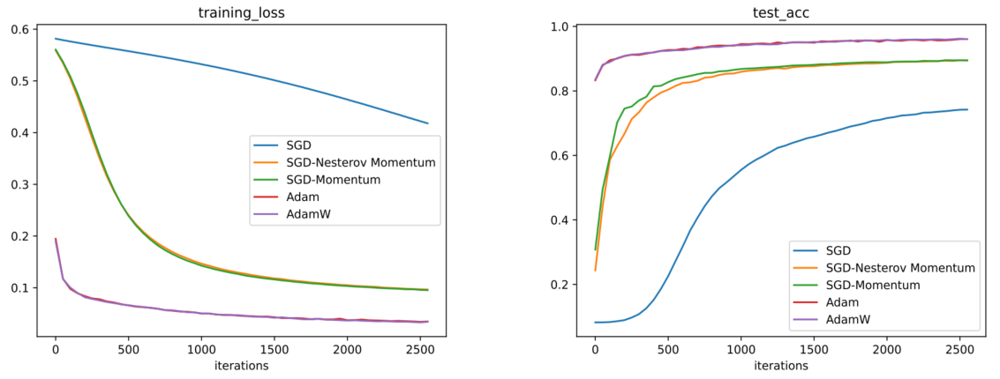
SGD 已过时 : 标准 SGD 过于缓慢，在现代深度学习任务中几乎不被单独使用。
动量是关键 : 仅仅在 SGD 中加入动量，就能带来收敛速度上的巨大飞跃。
Adam 家族的统治力 : Adam 和 AdamW 结合了动量的加速特性和自适应学习率（如 RMSProp）的稳定性，使其能够在各种任务上实现快速且稳健的收敛。 宏观：学习率调度器 在我们刚刚学习的自适应学习率优化器中，全局学习率 μ k \mu_k μ k 固定不变，有效学习率改变。例如 μ k s k [ j ] + ϵ \frac{\mu_k}{\sqrt{s_k[j] + \epsilon}} s k [ j ] + ϵ μ k 。我们把这个学习率拆开： θ k + 1 = θ k − μ k ⏟ 全局学习率 × 1 s k [ j ] + ϵ ⏟ RMSProp (微观学习率) × g k [ j ] \boldsymbol{\theta}_{k+1} = \boldsymbol{\theta}_k - \underbrace{\mu_k}_{\text{全局学习率}} \times \underbrace{\frac{1}{\sqrt{s_k[j] + \epsilon}}}_{\text{RMSProp (微观学习率)}} \times g_k[j] θ k + 1 = θ k − 全局学习率 μ k × RMSProp ( 微观学习率 ) s k [ j ] + ϵ 1 × g k [ j ] 其中，微观学习率在 每一步 为 每一个参数 自动调整一个“有效”学习率。这些可以视为“微观”层面的学习率调整。
接下来，我们会在“宏观”层面去调整那个全局学习率 μ k \mu_k μ k ，也就是在 每一个 或 每 同时调整所有参数的学习率。 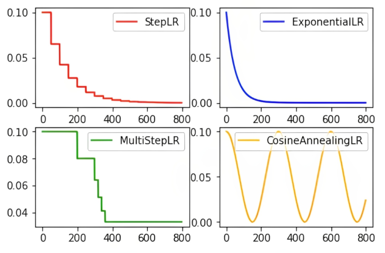
经典递减策略 μ k \mu_k μ k ：第 k k k 个 μ 0 \mu_0 μ 0 ：初始（或最大）的全局学习率。 k k k ：当前 k k k 不是前面的第 k k k 次迭代）。 阶梯式下降 (StepLR) 阶梯式下降 (Step Learning Rate Decay) 是最简单、最直观的衰减策略之一。它设定一个固定的衰减周期（ step_size），每当训练的 γ \gamma γ 。 学习率 μ k \mu_k μ k 在第 k k k 个 μ k = μ 0 × γ ⌊ k T s t e p ⌋ \mu_k = \mu_0 \times \gamma^{\left\lfloor \frac{k}{T_{step}} \right\rfloor} μ k = μ 0 × γ ⌊ T s t e p k ⌋ T s t e p T_{step} T s t e p ：学习率衰减的周期（以 γ \gamma γ ：学习率衰减的乘法因子。它通常是一个小于 ⌊ ⋅ ⌋ \lfloor \cdot \rfloor ⌊ ⋅ ⌋ ：向下取整函数。 ⌊ k / T s t e p ⌋ \lfloor k / T_{step} \rfloor ⌊ k / T s t e p ⌋ 计算的是当前 k k k 经历了多少个完整的衰减周期。 假设我们设置 μ 0 = 0.1 \mu_0 = 0.1 μ 0 = 0.1 , T s t e p = 100 T_{step} = 100 T s t e p = 100 , γ = 0.5 \gamma = 0.5 γ = 0.5 ： 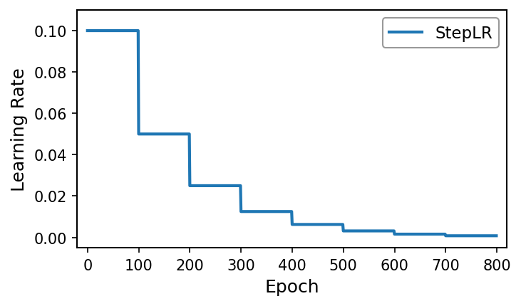
这种策略的特点是学习率在一段时间内（ T s t e p T_{step} T s t e p 个 多阶梯下降 (MultiStep Learning Rate Decay) 是 T s t e p T_{step} T s t e p 周期，而是允许用户显式地指定一组“里程碑”（milestones）。当训练达到这些特定的 γ \gamma γ 。 设里程碑列表为 M = [ m 1 , m 2 , … , m N ] M = [m_1, m_2, \ldots, m_N] M = [ m 1 , m 2 , … , m N ] ，其中 m i m_i m i 是 当 k = m 1 k = m_1 k = m 1 时， μ k = μ k − 1 × γ \mu_k = \mu_{k-1} \times \gamma μ k = μ k − 1 × γ 当 k = m 2 k = m_2 k = m 2 时， μ k = μ k − 1 × γ \mu_k = \mu_{k-1} \times \gamma μ k = μ k − 1 × γ 例如我们设置 μ 0 = 0.1 \mu_0 = 0.1 μ 0 = 0.1 , M = [ 200 , 300 , 350 , 500 ] M = [200, 300, 350, 500] M = [ 200 , 300 , 350 , 500 ] , γ = 0.8 \gamma = 0.8 γ = 0.8 ： 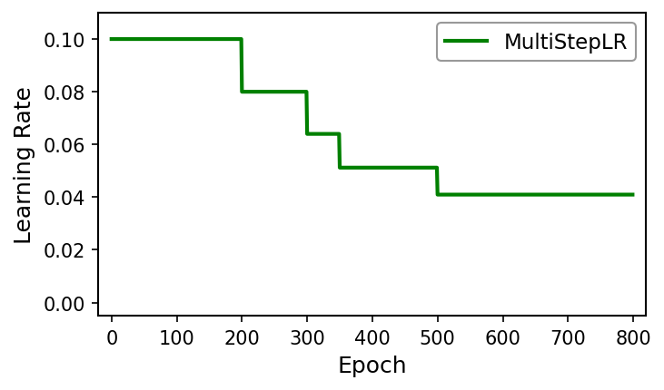
MultiStepLR
指数式下降 (ExponentialLR) 指数式下降 (Exponential Learning Rate Decay) 提供了一种平滑的衰减曲线，而不是阶梯式的突变。在这种策略下，学习率在 每个 都会乘以 γ \gamma γ 因子。 μ k = μ 0 × γ k \mu_k = \mu_0 \times \gamma^k μ k = μ 0 × γ k μ k = μ k − 1 × γ \mu_k = \mu_{k-1} \times \gamma μ k = μ k − 1 × γ 其中， μ 0 \mu_0 μ 0 是初始学习率， γ \gamma γ 是衰减因子， k k k 是当前的 与 γ \gamma γ 通常设为 γ \gamma γ 必须设置得 非常接近 ，例如 γ = 0.99 \gamma = 0.99 γ = 0.99 。如果 γ \gamma γ 太小（比如 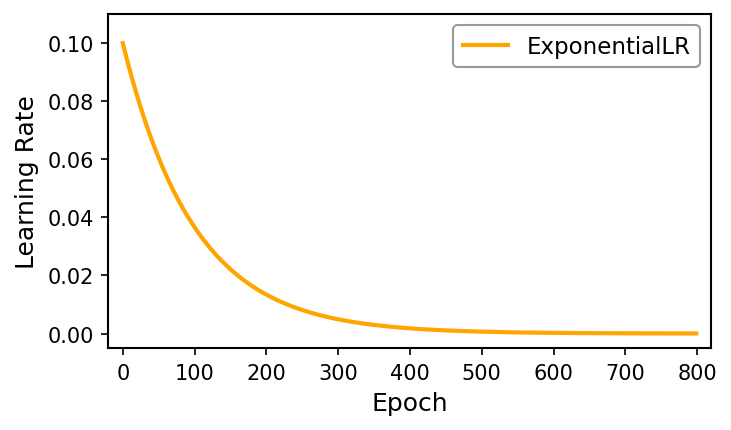
线性下降 (LinearLR) 线性下降 (Linear Learning Rate Decay) 策略使学习率在指定的总步数内，从初始值 μ 0 \mu_0 μ 0 线性（即均匀地）减少到一个结束值 μ e n d \mu_{end} μ e n d 。它在每一步减少的是一个固定的 量 ，而不是一个固定的 比例 。 假设调度器在 T t o t a l T_{total} T t o t a l 个 μ 0 \mu_0 μ 0 降至 μ e n d \mu_{end} μ e n d 。 μ k = μ e n d + ( μ 0 − μ e n d ) × ( max ( 0 , 1 − k T t o t a l ) ) \mu_k = \mu_{end} + (\mu_0 - \mu_{end}) \times \left( \max\left(0, 1 - \frac{k}{T_{total}}\right) \right) μ k = μ e n d + ( μ 0 − μ e n d ) × ( max ( 0 , 1 − T t o t a l k ) ) （注： max \max max 函数确保了 k > T t o t a l k > T_{total} k > T t o t a l 时，学习率保持为 μ e n d \mu_{end} μ e n d ） 如果 μ e n d \mu_{end} μ e n d 设为 k ≤ T t o t a l k \le T_{total} k ≤ T t o t a l ，公式可以简化为： μ k = μ 0 × ( 1 − k T t o t a l ) \mu_k = \mu_0 \times \left( 1 - \frac{k}{T_{total}} \right) μ k = μ 0 × ( 1 − T t o t a l k ) 例如 μ 0 = 0.1 \mu_0 = 0.1 μ 0 = 0.1 , μ e n d = 0 \mu_{end} = 0 μ e n d = 0 , T t o t a l = 800 T_{total} = 800 T t o t a l = 800 ： 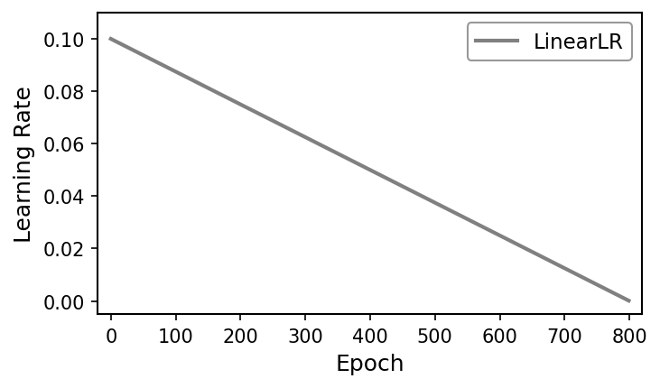
线性下降在现代
高级递减策略 余弦退火 (Cosine Annealing) 余弦退火是一种非常流行且高效的学习率调度策略。它摒弃了阶梯式下降的突变，转而使用一个余弦函数（的半个周期）来平滑地将学习率从初始值 μ 0 \mu_0 μ 0 降至一个最小值 μ m i n \mu_{min} μ min （通常为 假设我们的总训练周期（即完成一次退火）为 T m a x T_{max} T ma x 个 k k k -th epoch（其中 0 ≤ k ≤ T m a x 0 \le k \le T_{max} 0 ≤ k ≤ T ma x ）的学习率 μ k \mu_k μ k 为： μ k = μ m i n + 1 2 ( μ 0 − μ m i n ) ( 1 + cos ( k T m a x π ) ) \mu_k = \mu_{min} + \frac{1}{2} (\mu_0 - \mu_{min}) \left( 1 + \cos\left(\frac{k}{T_{max}}\pi\right) \right) μ k = μ min + 2 1 ( μ 0 − μ min ) ( 1 + cos ( T ma x k π ) ) 其中， μ m i n \mu_{min} μ min ( lr_min) 是学习率的下限，通常设置为 为什么有效？余弦退火的曲线（[0, π \pi π ]上的余弦曲线）具有一个重要特性：它在开始时下降缓慢，在中间阶段下降速度加快，而在接近 T m a x T_{max} T ma x 时下降速度又变得非常缓慢。 初期 ( k k k 接近 ：保持较高的学习率，快速推进。 中期 ( k k k 接近 T m a x / 2 T_{max}/2 T ma x /2 ) ：学习率稳定下降，模型快速收敛。 末期 ( k k k 接近 T m a x T_{max} T ma x ) ：学习率变得非常小，帮助模型在最优解附近进行精细调整（fine-tuning），从而收敛到更深的局部最小值。 例如 μ m i n = 0 \mu_{min}=0 μ min = 0 ， T m a x = 800 T_{max}=800 T ma x = 800 ： 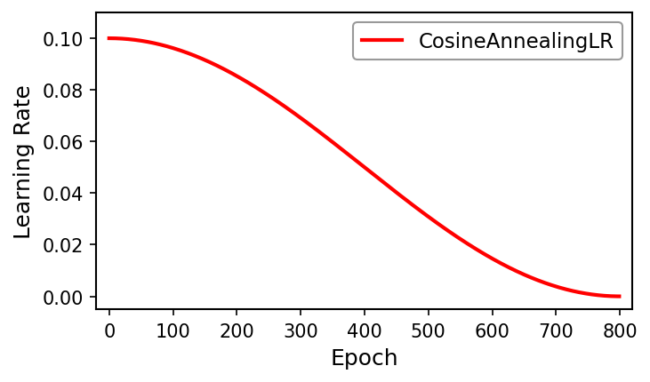
相比 无需手动指定衰减的“里程碑” ，整个过程是平滑且自动的。
带重启的余弦退火 (Stochastic Gradient Descent with Warm Restarts, SGDR) 是对余弦退火的强大扩展。它认识到，在训练过程中，模型可能会陷入一个“尖锐”的局部最小值，难以逃逸。
SGDR μ 0 \mu_0 μ 0 到 μ m i n \mu_{min} μ min 的“长途”退火，不如执行 多次“短途”退火 ，并在每次退火结束时，突然 “重启” 学习率，将其重置回 μ 0 \mu_0 μ 0 。 SGDR i i i 个周期的长度为 T i T_i T i 个 i i i 个周期内，自上次重启以来 已经过了 T c u r T_{cur} T c u r 个 0 ≤ T c u r ≤ T i 0 \le T_{cur} \le T_i 0 ≤ T c u r ≤ T i )，其学习率公式与标准余弦退火相同： μ k = μ m i n + 1 2 ( μ 0 − μ m i n ) ( 1 + cos ( T c u r T i π ) ) \mu_k = \mu_{min} + \frac{1}{2} (\mu_0 - \mu_{min}) \left( 1 + \cos\left(\frac{T_{cur}}{T_{i}}\pi\right) \right) μ k = μ min + 2 1 ( μ 0 − μ min ) ( 1 + cos ( T i T c u r π ) ) 但区别在于 T c u r T_{cur} T c u r 和 T i T_i T i 的管理： 当 T c u r = T i T_{cur} = T_i T c u r = T i 时，一次退火完成，学习率达到 μ m i n \mu_{min} μ min 。 在下一个 k + 1 k+1 k + 1 ），调度器执行“重启”：
T c u r T_{cur} T c u r 重置为
μ k + 1 \mu_{k+1} μ k + 1 被重置回 μ 0 \mu_0 μ 0 (或接近 μ 0 \mu_0 μ 0 的某个值)。 周期的长度 T i T_i T i 可以是固定的（例如， T i = 50 T_i = 50 T i = 50 ），也可以是 周期性增长的 （例如， T 0 = 10 T_0 = 10 T 0 = 10 , T i = T i − 1 × 2 T_i = T_{i-1} \times 2 T i = T i − 1 × 2 ，即周期变为 例如 T i = 200 T_{i}=200 T i = 200 ， μ 0 = 0.1 \mu_0=0.1 μ 0 = 0.1 ， μ m i n = 0 \mu_{min}=0 μ min = 0 ： 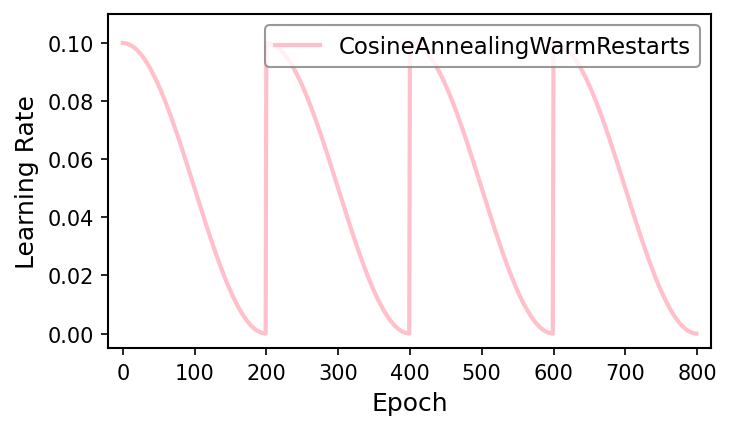
“重启”（Warm Restart）是 μ m i n \mu_{min} μ min 跳回 μ 0 \mu_0 μ 0 时：
逃离局部最优 ：这种突然增大的学习率（如同给优化器注入了能量）使得模型有能力“跳出”当前可能不够理想的局部最小值。
探索损失景观 ：模型被“推”到一个新的、可能更平坦（泛化性能更好）的区域，然后开始新一轮的余弦下降，寻找该区域内的最优解。 响应式 策略 (ReduceLROnPlateau) 基于平台期自动调整 (ReduceLROnPlateau) 是一种响应式（reactive）策略。它与前面所有基于“时间”（epoch
它的工作逻辑非常直观：“ 当模型的性能在一段时间内不再提升时，就降低学习率。 ”
监控 一个指标 V k V_k V k （例如 validation_loss或 validation_accuracy）。
等待 P P P (patience) 个
检查 ：在这 P P P 个 V k V_k V k 是否有“实质性”的改善？ 如果是 (例如 val_loss降低了) ：重置等待计数器，继续使用当前学习率 μ k \mu_k μ k 。 如果否 (即 val_loss停滞或上升) ：认为模型进入了“平台期”（Plateau）。
触发衰减 : μ k + 1 = μ k × γ \mu_{k+1} = \mu_k \times \gamma μ k + 1 = μ k × γ metric：被监控的指标（例如： val_loss）。 mode：模式（ 'min'或 'max'）。如果监控 val_loss，则为 'min'（希望它下降）；如果监控 val_accuracy，则为 'max'（希望它上升）。 P P P (patience) : “耐心”值。即连续 P P P 个 threshold：用于定义“实质性”改善的阈值。 cooldown：在触发一次衰减后，需要“冷却” C C C 个 优点 ：它自动完成了研究人员手动调整学习率的过程（“看起来
缺点 ：它强依赖于一个稳定且有代表性的验证集。如果验证集噪声很大，调度器可能会被频繁地（或错误地）触发。 patience和 factor的设置非常关键。 patience太小，学习率可能降得太快； patience太大，又会浪费训练时间。
现代的组合策略 我们继续使用 μ k \mu_k μ k 作为第 k k k 步（step or epoch）的学习率。 冷启动 (Cold Start) 问题 ：在训练刚开始时，一个深度神经网络面临着“冷启动”问题。这指的是模型处于一个非常特殊且不稳定的状态。
参数随机化 ：模型的权重是 随机初始化 的。它们（以及它们对应的激活值）距离任何有意义的解都非常遥远，处于一种“混沌”状态。 梯度的剧烈变化 ：由于参数是随机的，网络在最初几个批次（batches）数据上计算出的梯度可能非常大，且方向极不稳定。 如果我们直接进行参数更新 θ k + 1 = θ k − μ k g k \boldsymbol{\theta}_{k+1} = \boldsymbol{\theta}_k - \mu_k \boldsymbol{g}_k θ k + 1 = θ k − μ k g k ，即使 μ k \mu_k μ k 相对较小，一个巨大的 g k \boldsymbol{g}_k g k 也会导致更新步长 μ k g k \mu_k \boldsymbol{g}_k μ k g k 变得极大。这会使参数 θ \boldsymbol{\theta} θ 瞬间“飞”出合理的数值区域，导致损失（Loss）激增或变为 NaN，这就是 梯度爆炸 。结果，模型可能需要很长时间才能从这种早期的“震荡”中恢复过来，甚至可能永远无法收敛到好的解。 梯度裁剪 (Gradient Clipping) 既然训练初期（或在训练 g k \boldsymbol{g}_k g k 可能会变得非常大，那么一个解决方案就是直接控制梯度本身。 这种方法检查梯度向量 g k \boldsymbol{g}_k g k 中的 每一个分量 g k , i g_{k,i} g k , i 。如果某个分量的值超出了预设范围 [ min_val , max_val ] [\text{min\_val}, \text{max\_val}] [ min_val , max_val ] ，它就会被“削平”到这个范围的边界。 公式 ：设裁剪范围为 [ − C , C ] [-C, C] [ − C , C ] 。对于梯度向量 g k \boldsymbol{g}_k g k 中的第 i i i 个分量 g k , i g_{k,i} g k , i ，裁剪后的分量 g ^ k , i \hat{g}_{k,i} g ^ k , i 为： g ^ k , i = max ( min ( g k , i , C ) , − C ) \hat{g}_{k,i} = \max\left(\min(g_{k,i}, C), -C\right) g ^ k , i = max ( min ( g k , i , C ) , − C ) 这在数学上通常被记为 clip ( g k , i , − C , C ) \text{clip}(g_{k,i}, -C, C) clip ( g k , i , − C , C ) 。 优点是实现简单，计算开销非常小。但是 缺点是会改变梯度的方向 。例如，假设梯度 g = [ 20 , 2 ] \boldsymbol{g} = [20, 2] g = [ 20 , 2 ] ，裁剪阈值 C = 5 C=5 C = 5 。裁剪后变为 g ^ = [ 5 , 2 ] \hat{\boldsymbol{g}} = [5, 2] g ^ = [ 5 , 2 ] 。原始方向（约 5.7°）与新方向（约 21.8°）完全不同。这可能会扭曲优化器本应遵循的下降路径。 这种方法关心的是整个梯度向量 g k \boldsymbol{g}_k g k 的“长度”，即它的 L2-norm ∥ g k ∥ 2 \|\boldsymbol{g}_k\|_2 ∥ g k ∥ 2 。它旨在限制更新步长的 总幅度 ，同时 保持梯度的原始方向不变 。 设 g k \boldsymbol{g}_k g k 为在第 k k k 步计算出的原始梯度向量， θ \theta θ 为设定的裁剪阈值（最大范数）。 L 2 = ∥ g k ∥ 2 = ∑ i ( g k , i ) 2 L_2 = \|\boldsymbol{g}_k\|_2 = \sqrt{\sum_i (g_{k,i})^2} L 2 = ∥ g k ∥ 2 = i ∑ ( g k , i ) 2 然后，应用裁剪规则得到新的（可能被裁剪的）梯度 g ^ k \hat{\boldsymbol{g}}_k g ^ k ： g ^ k = { g k if L 2 ≤ θ θ × g k L 2 if L 2 > θ \hat{\boldsymbol{g}}_k =
\begin{cases}
\boldsymbol{g}_k & \text{if } L_2 \le \theta \\
\\
\theta \times \frac{\boldsymbol{g}_k}{L_2} & \text{if } L_2 > \theta
\end{cases} g ^ k = ⎩ ⎨ ⎧ g k θ × L 2 g k if L 2 ≤ θ if L 2 > θ 如果 L 2 ≤ θ L_2 \le \theta L 2 ≤ θ ：梯度大小在可接受范围内，不做任何改动。 如果 L 2 > θ L_2 > \theta L 2 > θ ：梯度发生“爆炸”。此时， g k L 2 \frac{\boldsymbol{g}_k}{L_2} L 2 g k 是 g k \boldsymbol{g}_k g k 的 单位向量 （方向相同，长度为 θ \theta θ ，使其最终的 L2-norm 恰好等于 θ \theta θ 。 优点是保持了梯度的原始方向 。 g k L 2 \frac{\boldsymbol{g}_k}{L_2} L 2 g k 是原始梯度的单位向量（方向），我们只是将其长度（幅度）从 L 2 L_2 L 2 缩放到了 θ \theta θ 。这被认为在理论上更合理，因为它只限制了步长，而不干扰下降方向。缺点是计算上需要遍历所有参数计算一次 L2-norm，开销略大于 Clip by Value。因此，Clip by Norm 现代深度学习中更常用、更受推荐 的方法。 学习率预热 (Learning Rate Warmup) 还有一种做法是通过 控制学习率 来间接缓解冷启动问题。
其核心思想是： 不在训练一开始就使用目标峰值学习率，而是从一个非常小的值（甚至是 T w a r m u p T_{warmup} T w a r m u p 步内，逐步（通常是线性）地将学习率提高到我们的目标峰值 μ p e a k \mu_{peak} μ p e ak 。 公式 (线性预热) ：假设我们设定预热阶段持续 T w a r m u p T_{warmup} T w a r m u p 步，目标峰值学习率为 μ p e a k \mu_{peak} μ p e ak ，起始学习率为 μ s t a r t \mu_{start} μ s t a r t （通常 μ s t a r t = 0 \mu_{start}=0 μ s t a r t = 0 ）。 在预热阶段（即 0 ≤ k < T w a r m u p 0 \le k < T_{warmup} 0 ≤ k < T w a r m u p ），如果 μ s t a r t = 0 \mu_{start} = 0 μ s t a r t = 0 ： μ k = μ p e a k × ( k T w a r m u p ) \mu_k = \mu_{peak} \times \left(\frac{k}{T_{warmup}}\right) μ k = μ p e ak × ( T w a r m u p k ) 工作机制 ：在 k = 0 k=0 k = 0 时， μ 0 = 0 \mu_0=0 μ 0 = 0 （或非常小）。最初的几步更新非常微小，这给了模型一个“缓冲期”。这些微小的步骤允许模型的权重从完全随机的状态“安顿”下来，开始形成有意义的结构。梯度的方向开始变得更加一致和稳定。随着 k k k 接近 T w a r m u p T_{warmup} T w a r m u p ，模型已经度过了最不稳定的“冷启动”阶段。此时，学习率也平滑地增加到了 μ p e a k \mu_{peak} μ p e ak ，模型可以开始利用这个大学习率进行快速、稳定的收敛。 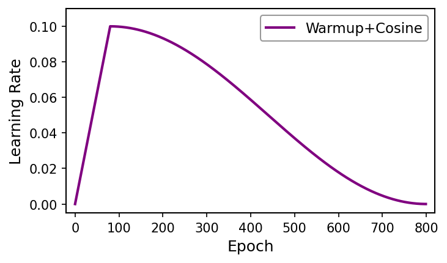
黄金配方： AdamW + 线性预热 + 余弦退火 + 按范数裁剪
现在，我们可以组合出当前（尤其是训练 Transformer 架构时）最主流、最强大、也是最受推荐的“黄金配方” (Golden Formula)。
优化器：AdamW (Adam with Decoupled Weight Decay) ： 学习率 μ p e a k = 1 × 1 0 − 4 ∼ 5 × 1 0 − 4 \mu_{peak}=1 \times 10^{-4}\sim5 \times 10^{-4} μ p e ak = 1 × 1 0 − 4 ∼ 5 × 1 0 − 4 。这是一个非常关键的超参数。对于 Transformer 从头训练， 3e-4是一个非常经典的起始点。对于微调，这个值会更小 (例如 1e-5到 5e-5)。我们这里假设从头训练，选择 lr = 3e-4。 Betas ( betas) : ( 0.9 , 0.999 ) (0.9, 0.999) ( 0.9 , 0.999 ) 。几乎总是使用这个默认值，无需更改。 Epsilon ( eps) : 1 × 1 0 − 8 1 \times 10^{-8} 1 × 1 0 − 8 。默认值，无需更改。 权重衰减 ( weight_decay) : 0.1 0.1 0.1 。这是 AdamW 的关键参数。对于 weight_decay (如 0.1 或 0.05) 是常见的，它提供了强大的正则化效果。
调度策略：线性预热 (Warmup) + 余弦退火 (Decay) ： 预热阶段 ( T_warmup) ：通常设置为总训练周期（Epochs 或 Steps）的 5% 到 10% 。以总周期 T_warmup = 80 epochs。 衰减阶段 ( T_decay) ：周期数为 T t o t a l − T w a r m u p = 800 − 80 = 720 epochs T_{total} - T_{warmup} = 800 - 80 = 720 \text{ epochs} T t o t a l − T w a r m u p = 800 − 80 = 720 epochs 学习率终点 ( \mu_{end}) ：通常设置为 0，或峰值学习率的 10% (即 3e-5)。设置为 0 是最简单、最常见的余弦退火做法。
稳定性：按范数裁剪 (Clip by Norm) ： 裁剪阈值 ( \theta或 max_norm) : 1.0 。这是一个非常标准（近乎默认）的设置。有时也会用 0.5 或 5.0，但 1.0 是最稳妥的起点。